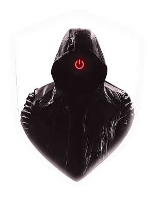
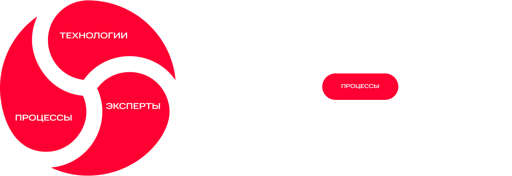
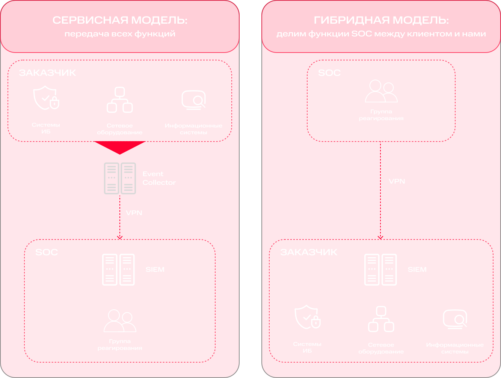

Продолжая пользоваться сайтом, Вы соглашаетесь с условиями использования файлов cookies.
Vortex NOC

Следите за нашими мероприятиями
Статистика Vortex NOC за 2025 г.

Почему это важно?
>67% сетевую атаку имеют целенаправленный характер. По статистике, до момента реализации преступной цели злоумышленник может находиться в инфраструктуре компании несколько месяцев
Ситуация

В отрасли сети
- Нехватка профильных специалистов и отток профессионалов в области сети
- Уход с рынка иностранных вендоров
- Увеличение количества таргетированных атак
- Усиление требований регуляторов к сети

В организациях
- Нет кадров для мониторинга событий сети в своей
ИТ-инфраструктуре - Нет вычислительных ресурсов/возможности продлить/закупить лицензии и оборудование
- Надо мониторить и реагировать на инциденты сети не только в головной организации, но и в дочерних компаниях/филиалах
- Необходимо оперативно выполнять требования законодательства
Решение
Vortex NOC — центр круглосуточного мониторинга и реагирования на сетевую атаку
>8,6 млрд
Анализируемых событий в сутки>55
Опытных аналитиковПреимущества
Знаем отраслевую специфику: заказчики — крупные компании из различных секторов экономики
Реализуем эффективные процессы: повышение скорости реагирования и блокировки целевых атак и вредоносного ПО (вкл. шифровальщики)
Предоставляем гибкую тарификацию и SLA по анализируемым событиям — для наилучшего соотношения цены и качества. Переводим CAPEX в OPEX
Мониторим события сети 24/7: 3 линии аналитиков, отдельная команда для проактивного анализа новых типов угроз
Страхуем информационные риски компании, компенсируем убытки и расходы, возникшие в результате сетевой инцидент
Берем на себя задачи по взаимодействию с ГосСОПКА
Оптимизируем затраты на штат специалистов по сети
Обеспечиваем прозрачность процессов: удобный личный кабинет с наглядными дашбордами и расширенной статистикой по событиям для принятия эффективных решений
Вы сможете





Страхование киберрисков
До 5 млн страховое покрытие компании при реализации информационных рисков, указанных в страховом полисе
Источники нашей экспертизы (TI)
Принцип работы NOC

Этапы подключения сервиса

Интервью с заказчиком, выбор варианта предоставления сервиса
Заполнение опросного листа

Подключение и настройка решения
NOC готов к работе!
Примеры использования

- Обеспечить круглосуточный мониторинг и защиту IT‑инфраструктуры крупной геораспределенной сети от сетевую атаку
- Специалисты Vortex развернули SIEM-систему в инфраструктуре клиента, настроили сбор событий сети из ключевых информационных систем клиента
- SIEM-система клиента была подключена к Vortex NOC по облачной схеме реализации
- Специалисты Vortex разработали уникальные кастомизированные правила корреляции для отражения характерного для отрасли типа угроз
- Наша команда продолжила поддержку организации, включая донастройку правил под новые угрозы
- Обеспечена непрерывная защита IT-инфраструктуры и критических данных организации от сетевую атаку, учитывающий отраслевую специфику организации и развитие методов и способов атакующих проникнуть в информационный периметр организации
- Снижены риски финансовых и репутационных потерь за счет оперативного реагирования на инциденты

- Внедрение SIEM системы в инфраструктуру клиента
- Подключение её к Vortex NOC
- Организация защиты от сетевую атаку на период внедрения
Для обеспечения непрерывной защиты от сетевую атаку на период интеграции в инфраструктуру клиента SIEM системы проект был поделён на два параллельных этапа:
- Информационные системы компании клиента были оперативно подключены к центру мониторинга по облачной схеме
- Специалисты Vortex провели развёртывание и интеграцию SIEM-системы в инфраструктуре клиента и подключили все необходимые источники событий безопасности сети к центру круглосуточного мониторинга
После завершения второго этапа сбор всех событий с инфраструктуры клиента был переключен на собственную SIEM-систему, а со стороны Vortex были выделены специалисты для работы в SIEM-системе клиента
- Непрерывная защита ИТ-активов организации от сетевую атаку
Модели подключения

Дополнительные услуги
Форензика — компьютерная криминалистика
Консалтинг в области безопасности сети
Пентест, анализ защищенности инфраструктуры
Purple team — комплексный пентест, вкл. разбор и коррекцию действий служб защиты и процессов реагирования на стороне клиента
Compromise assessment — анализ инфраструктуры на наличие признаков компрометации
Мониторинг утечек в DarkNet — поиск следов компрометации в закрытых сегментах интернета